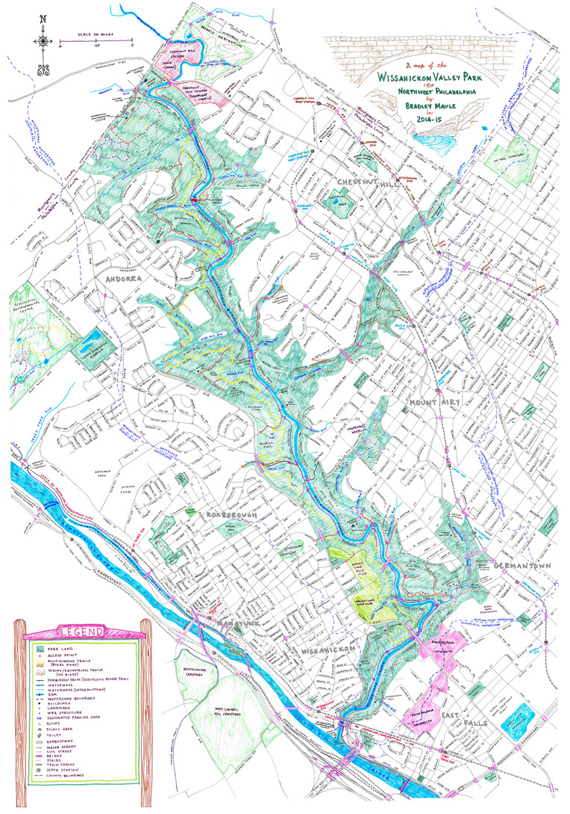

Parsing XML & Creating Interactive Maps with Leaflet in R
Learn how to parse XML and use Leaflet to create interactive maps in R

Motivation
Shortly after moving to the Wissahickon neighborhood, I was looking for a detailed map of the Wissahickon Valley Park to plan some hikes and learn more about the woods. A lot of the maps I found through googling were either too detailed or not detailed enough, and almost none were interactive. One of the best maps I found was this one below - it has the right level of detail and big picture view I was looking for, but I never heard back from the creator about purchasing a print.

(source: http://phillyskyline.com/2015/04/22/happy-earth-day-and-other-assorted-one-mans-trash-affairs/)
After some more goolging I found this interactive map created by the Friends of the Wissahickon. It has a lot of the park attrractions I was looking for in a map, but I really wanted to be able to make it my own and document my hiking loops, notes and tips. Rather than just make a copy of the Google map, I decided to create my own using leaflet and R.
Data Prep
To get started, I created a copy of the Friends of the Wissahickon map and exported each layer (Kiosks, Parking, Trailheads…) as its own .KMZ file, then used https://www.gpsvisualizer.com/convert_input to convert the .KMZ file to .GPX. A .GPX file is basically XML flavored with some GPS data, so once I had the all of the .GPX files, I was able to use the amazing XML R package to parse the XML.
As someone used to working with dataframes, parsing XML in R can be tricky. There’s lots of XML parsing posts out there but here’s what worked for me:
- Understand the structure of the XML file
the file
Hikes
Process
Brendan Graham
Senior Clinical Data Analyst
My interests include health care data science and predictive modeling in an operational setting.